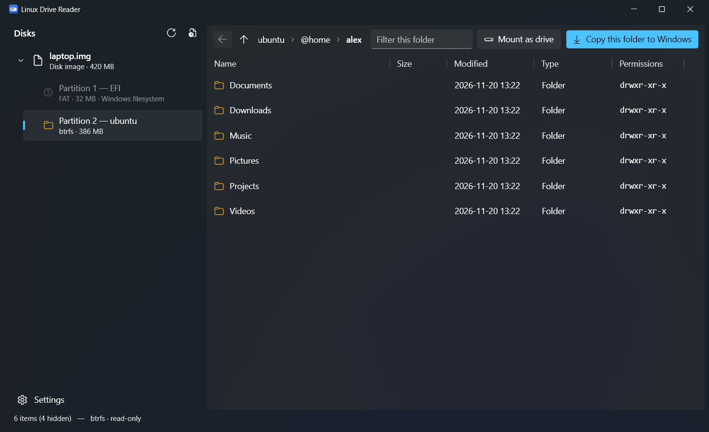
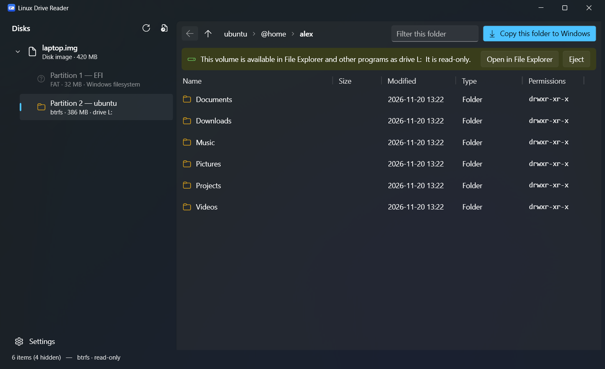

🗂️
The filesystems Linux actually uses
ext2, ext3 and ext4; btrfs with its subvolumes, snapshots and zstd, LZO or zlib compression; and xfs.
Browse, copy and mount ext4, btrfs and xfs drives, even encrypted ones, straight from Windows. No WSL, no drivers, and nothing is ever written to your disk.

ext2, ext3 and ext4; btrfs with its subvolumes, snapshots and zstd, LZO or zlib compression; and xfs.
Unlock LUKS1 and LUKS2 volumes with your password and open the LVM volumes inside: the standard “encrypted install” layout works end to end.
“Mount as drive” makes a Linux volume appear as a drive in File Explorer, so any program can open your files directly.
Your disk is never written to. On btrfs, every file is checked against its stored checksum, so corruption is reported instead of copied.
An ordinary Windows app. The filesystem readers are built in, so there is nothing else to install and nothing running in the background.
Names Windows doesn’t allow are fixed and reported, original dates are kept, and existing files are never overwritten.
Pick an encrypted partition and type its password. Linux Drive Reader unlocks it, finds the LVM volume group inside and lists every volume, ready to browse.
The password is never stored. Unlocking takes a few seconds, exactly as on Linux.

Click Mount as drive and the volume appears in File Explorer as a drive letter. Open documents in Word, photos in your viewer, or search it like any other drive.
Requires Windows 11 version 24H2 or newer. The drive is read-only and disappears when you eject it or close the app.


That warning appears for programs that aren’t code-signed, which costs money this free project hasn’t spent yet. Click More info, then Run anyway. The full source code is public on GitHub, and each release lists SHA-256 checksums of its files.
It never writes to the disks it reads: they are opened read-only, and the drive letter is read-only too. If you shut Linux down uncleanly the app will tell you, because the most recent changes may not be visible yet.
Windows only lets administrators read a disk directly. Disk image files work without them. You can also turn on Ask for administrator rights at startup in Settings.
No. The filesystem readers are written into the app itself. The drive letter uses Windows’ own built-in file-sharing client talking to the app on this computer only.
Windows 11, 64-bit. Mounting as a drive letter needs version 24H2 or newer; browsing and copying work on earlier versions of Windows 11.
Open an issue on GitHub with the filesystem type the app shows. Unsupported formats are recognised and named, even when they can’t be opened yet.